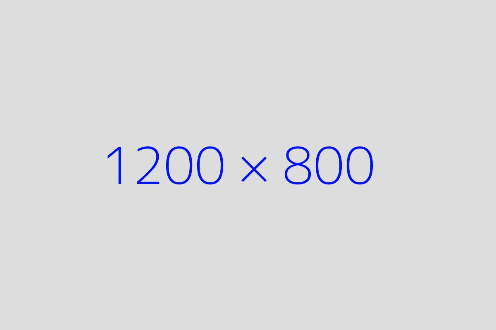

Key Features: Single-Click Tracking: Each click is recorded exactly once in the accumulator Visual Feedback: Red highlight on clicked cell Coordinates display in bottom-right corner Debugging Tools: Console logs for tracking clicks Global clearClicks() and getClicks() functions Proper Initialization: Handles both cached and loading images Prevents duplicate event listeners How to Use: Click anywhere on the image to: Highlight the cell See coordinates Add to click history Use these in console: getClicks() - Returns all recorded clicks clearClicks() - Resets the accumulator and UI The grid remains customizable by modifying the config object. This version should work perfectly with no duplicate clicks in the accumulator.
For grid without image, showing the grid cells that were clicked on the present page see itinerary-on-map-no-img.html